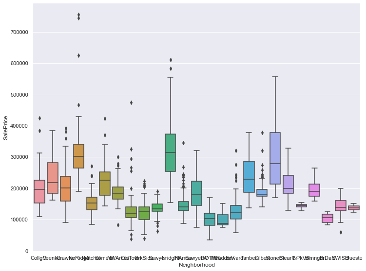

import numpy as np
import pandas as pd
import matplotlib.pyplot as plt
import seaborn as sns
import warnings
from sklearn.preprocessing import StandardScaler
train_path = 'train.csv'
train_data = pd.read_csv(train_path)
train_data = train_data.drop('Id', axis=1)
test_path = 'test.csv'
test_data = pd.read_csv(test_path)
test_data = test_data.drop('Id', axis=1)
test_data
| MSSubClass | MSZoning | LotFrontage | LotArea | Street | Alley | LotShape | LandContour | Utilities | LotConfig | ... | ScreenPorch | PoolArea | PoolQC | Fence | MiscFeature | MiscVal | MoSold | YrSold | SaleType | SaleCondition | |
|---|---|---|---|---|---|---|---|---|---|---|---|---|---|---|---|---|---|---|---|---|---|
| 0 | 20 | RH | 80.0 | 11622 | Pave | NaN | Reg | Lvl | AllPub | Inside | ... | 120 | 0 | NaN | MnPrv | NaN | 0 | 6 | 2010 | WD | Normal |
| 1 | 20 | RL | 81.0 | 14267 | Pave | NaN | IR1 | Lvl | AllPub | Corner | ... | 0 | 0 | NaN | NaN | Gar2 | 12500 | 6 | 2010 | WD | Normal |
| 2 | 60 | RL | 74.0 | 13830 | Pave | NaN | IR1 | Lvl | AllPub | Inside | ... | 0 | 0 | NaN | MnPrv | NaN | 0 | 3 | 2010 | WD | Normal |
| 3 | 60 | RL | 78.0 | 9978 | Pave | NaN | IR1 | Lvl | AllPub | Inside | ... | 0 | 0 | NaN | NaN | NaN | 0 | 6 | 2010 | WD | Normal |
| 4 | 120 | RL | 43.0 | 5005 | Pave | NaN | IR1 | HLS | AllPub | Inside | ... | 144 | 0 | NaN | NaN | NaN | 0 | 1 | 2010 | WD | Normal |
| ... | ... | ... | ... | ... | ... | ... | ... | ... | ... | ... | ... | ... | ... | ... | ... | ... | ... | ... | ... | ... | ... |
| 1454 | 160 | RM | 21.0 | 1936 | Pave | NaN | Reg | Lvl | AllPub | Inside | ... | 0 | 0 | NaN | NaN | NaN | 0 | 6 | 2006 | WD | Normal |
| 1455 | 160 | RM | 21.0 | 1894 | Pave | NaN | Reg | Lvl | AllPub | Inside | ... | 0 | 0 | NaN | NaN | NaN | 0 | 4 | 2006 | WD | Abnorml |
| 1456 | 20 | RL | 160.0 | 20000 | Pave | NaN | Reg | Lvl | AllPub | Inside | ... | 0 | 0 | NaN | NaN | NaN | 0 | 9 | 2006 | WD | Abnorml |
| 1457 | 85 | RL | 62.0 | 10441 | Pave | NaN | Reg | Lvl | AllPub | Inside | ... | 0 | 0 | NaN | MnPrv | Shed | 700 | 7 | 2006 | WD | Normal |
| 1458 | 60 | RL | 74.0 | 9627 | Pave | NaN | Reg | Lvl | AllPub | Inside | ... | 0 | 0 | NaN | NaN | NaN | 0 | 11 | 2006 | WD | Normal |
1459 rows × 79 columns
tmp3 =train_data.isnull().sum()
# tmp3
tmp3[tmp3>0].sort_values(ascending=False)
PoolQC 1453
MiscFeature 1406
Alley 1369
Fence 1179
FireplaceQu 690
LotFrontage 259
GarageYrBlt 81
GarageType 81
GarageFinish 81
GarageQual 81
GarageCond 81
BsmtFinType2 38
BsmtExposure 38
BsmtFinType1 37
BsmtCond 37
BsmtQual 37
MasVnrArea 8
MasVnrType 8
Electrical 1
dtype: int64

train_data['SalePrice'].describe()
count 1460.000000
mean 180921.195890
std 79442.502883
min 34900.000000
25% 129975.000000
50% 163000.000000
75% 214000.000000
max 755000.000000
Name: SalePrice, dtype: float64
通过观察，SalePrice没有无效或者非数值数据
plt.figure(figsize = (12, 8))
# sns.set()
sns.displot(train_data['SalePrice'])
<seaborn.axisgrid.FacetGrid at 0x1ece6c52e50>
<Figure size 864x576 with 0 Axes>
# warnings.filterwarnings('ignore')
# plt.figure(figsize=(12, 8))
# plt.scatter(train_data['LotArea'], train_data['SalePrice'])
# plt.xlabel('LotArea')
# plt.ylabel('SalePrice')
# plt.show()
sns.relplot('LotArea', 'SalePrice', data=train_data, kind='scatter')
<seaborn.axisgrid.FacetGrid at 0x1ece819e7c0>
plt.figure(figsize=(12, 8))
sns.boxplot(train_data['YearBuilt'], train_data['SalePrice'])
plt.show()
# plt.figure(figsize=(12, 8))
# sns.boxplot(train_data['Neighborhood'], train_data['SalePrice'])
g = sns.catplot('Neighborhood', 'SalePrice', data=train_data, kind='strip')
g.fig.set_size_inches(12, 8)
plt.show()
g = sns.catplot('Neighborhood', 'SalePrice', data=train_data, kind='point')
g.fig.set_size_inches(12, 8)
plt.show()
g = sns.catplot('Neighborhood', 'SalePrice', data=train_data, kind='bar')
g.fig.set_size_inches(12, 8)
plt.show()
g = sns.catplot('Neighborhood', 'SalePrice', data=train_data, kind='box')
g.fig.set_size_inches(12, 8)
plt.show()

# g = sns.catplot('Neighborhood', 'SalePrice', data=train_data, kind='violin')
# g.fig.set_size_inches(12, 8)
# plt.show()
g = sns.catplot('OverallQual', 'SalePrice', data=train_data, kind='box')
g.fig.set_size_inches(12, 8)
plt.show()
plt.figure(figsize=(12, 8))
corrmat = train_data.corr()
sns.heatmap(corrmat, annot=False, vmax=1, vmin=-1)
plt.show()
corrmat['SalePrice'].sort_values(ascending=False)
SalePrice 1.000000
OverallQual 0.790982
GrLivArea 0.708624
GarageCars 0.640409
GarageArea 0.623431
TotalBsmtSF 0.613581
1stFlrSF 0.605852
FullBath 0.560664
TotRmsAbvGrd 0.533723
YearBuilt 0.522897
YearRemodAdd 0.507101
GarageYrBlt 0.486362
MasVnrArea 0.477493
Fireplaces 0.466929
BsmtFinSF1 0.386420
LotFrontage 0.351799
WoodDeckSF 0.324413
2ndFlrSF 0.319334
OpenPorchSF 0.315856
HalfBath 0.284108
LotArea 0.263843
BsmtFullBath 0.227122
BsmtUnfSF 0.214479
BedroomAbvGr 0.168213
ScreenPorch 0.111447
PoolArea 0.092404
MoSold 0.046432
3SsnPorch 0.044584
BsmtFinSF2 -0.011378
BsmtHalfBath -0.016844
MiscVal -0.021190
LowQualFinSF -0.025606
YrSold -0.028923
OverallCond -0.077856
MSSubClass -0.084284
EnclosedPorch -0.128578
KitchenAbvGr -0.135907
Name: SalePrice, dtype: float64
plt.figure(figsize=(12, 8))
SPcorrmat = train_data.corr()[u'SalePrice']
SPcorrmat = SPcorrmat.sort_values(key=abs, ascending=False)
# 和上面取出的结果一样
plt.plot(SPcorrmat.head(10))
[<matplotlib.lines.Line2D at 0x1ecf2abffa0>]
取与SalePrice相关性较大的几个特征，暂时先取6个。
OverallQual
GrLivArea
GarageCars
GarageArea
TotalBsmtSF
1stFlrSF
path = 'extracted_data.csv'
data = pd.read_csv(path)
data
| OverallQual | GrLivArea | GarageCars | GarageArea | TotalBsmtSF | 1stFlrSF | SalePrice | |
|---|---|---|---|---|---|---|---|
| 0 | 7 | 1710 | 2 | 548 | 856 | 856 | 208500 |
| 1 | 6 | 1262 | 2 | 460 | 1262 | 1262 | 181500 |
| 2 | 7 | 1786 | 2 | 608 | 920 | 920 | 223500 |
| 3 | 7 | 1717 | 3 | 642 | 756 | 961 | 140000 |
| 4 | 8 | 2198 | 3 | 836 | 1145 | 1145 | 250000 |
| ... | ... | ... | ... | ... | ... | ... | ... |
| 1455 | 6 | 1647 | 2 | 460 | 953 | 953 | 175000 |
| 1456 | 6 | 2073 | 2 | 500 | 1542 | 2073 | 210000 |
| 1457 | 7 | 2340 | 1 | 252 | 1152 | 1188 | 266500 |
| 1458 | 5 | 1078 | 1 | 240 | 1078 | 1078 | 142125 |
| 1459 | 5 | 1256 | 1 | 276 | 1256 | 1256 | 147500 |
1460 rows × 7 columns
tmp = data.isnull().sum()
tmp
# tmp[tmp>0].sort_values(ascending=False)
OverallQual 0
GrLivArea 0
GarageCars 0
GarageArea 0
TotalBsmtSF 0
1stFlrSF 0
SalePrice 0
dtype: int64
sp = data.iloc[:, -1]
data = (data - data.mean()) / data.std()
data['SalePrice'] = sp
data
| OverallQual | GrLivArea | GarageCars | GarageArea | TotalBsmtSF | 1stFlrSF | SalePrice | |
|---|---|---|---|---|---|---|---|
| 0 | 0.651256 | 0.370207 | 0.311618 | 0.350880 | -0.459145 | -0.793162 | 208500 |
| 1 | -0.071812 | -0.482347 | 0.311618 | -0.060710 | 0.466305 | 0.257052 | 181500 |
| 2 | 0.651256 | 0.514836 | 0.311618 | 0.631510 | -0.313261 | -0.627611 | 223500 |
| 3 | 0.651256 | 0.383528 | 1.649742 | 0.790533 | -0.687089 | -0.521555 | 140000 |
| 4 | 1.374324 | 1.298881 | 1.649742 | 1.697903 | 0.199611 | -0.045596 | 250000 |
| ... | ... | ... | ... | ... | ... | ... | ... |
| 1455 | -0.071812 | 0.250316 | 0.311618 | -0.060710 | -0.238040 | -0.542249 | 175000 |
| 1456 | -0.071812 | 1.061003 | 0.311618 | 0.126376 | 1.104547 | 2.354894 | 210000 |
| 1457 | 0.651256 | 1.569110 | -1.026506 | -1.033560 | 0.215567 | 0.065634 | 266500 |
| 1458 | -0.794879 | -0.832502 | -1.026506 | -1.089686 | 0.046889 | -0.218907 | 142125 |
| 1459 | -0.794879 | -0.493765 | -1.026506 | -0.921308 | 0.452629 | 0.241532 | 147500 |
1460 rows × 7 columns
data.insert(0, 'Ones', 1)
data
| Ones | OverallQual | GrLivArea | GarageCars | GarageArea | TotalBsmtSF | 1stFlrSF | SalePrice | |
|---|---|---|---|---|---|---|---|---|
| 0 | 1 | 0.651256 | 0.370207 | 0.311618 | 0.350880 | -0.459145 | -0.793162 | 208500 |
| 1 | 1 | -0.071812 | -0.482347 | 0.311618 | -0.060710 | 0.466305 | 0.257052 | 181500 |
| 2 | 1 | 0.651256 | 0.514836 | 0.311618 | 0.631510 | -0.313261 | -0.627611 | 223500 |
| 3 | 1 | 0.651256 | 0.383528 | 1.649742 | 0.790533 | -0.687089 | -0.521555 | 140000 |
| 4 | 1 | 1.374324 | 1.298881 | 1.649742 | 1.697903 | 0.199611 | -0.045596 | 250000 |
| ... | ... | ... | ... | ... | ... | ... | ... | ... |
| 1455 | 1 | -0.071812 | 0.250316 | 0.311618 | -0.060710 | -0.238040 | -0.542249 | 175000 |
| 1456 | 1 | -0.071812 | 1.061003 | 0.311618 | 0.126376 | 1.104547 | 2.354894 | 210000 |
| 1457 | 1 | 0.651256 | 1.569110 | -1.026506 | -1.033560 | 0.215567 | 0.065634 | 266500 |
| 1458 | 1 | -0.794879 | -0.832502 | -1.026506 | -1.089686 | 0.046889 | -0.218907 | 142125 |
| 1459 | 1 | -0.794879 | -0.493765 | -1.026506 | -0.921308 | 0.452629 | 0.241532 | 147500 |
1460 rows × 8 columns
cols = data.shape[1]
x = data.iloc[:, 0:cols-1]
y = data.iloc[:, cols-1:cols]
x = np.matrix(x.values)
y = np.matrix(y.values)
theta = np.matrix(np.zeros(x.shape[1]))
theta
matrix([[0., 0., 0., 0., 0., 0., 0.]])
def computeCost(X, y, theta):
inner = np.power((X * theta.T - y), 2)
return np.sqrt(np.sum(inner) / (2 * len(X)))
def gradientDescent(x, y, theta, alpha, iters):
# 存theta的向量
temp = np.matrix(np.zeros(theta.shape))
# 参数（特征）数量
parameters = int(theta.ravel().shape[1])
# 每一代的代价
cost = np.zeros(iters)
for i in range(iters):
error = (x * theta.T) - y
for j in range(parameters):
term = np.multiply(error, x[:, j])
temp[0, j] = theta[0, j] - ((alpha / len(x)) * np.sum(term))
theta = temp
cost[i] = computeCost(x, y, theta)
return theta, cost
g1, cost1 = gradientDescent(x, y, theta, 0.01, 1500)
g1
matrix([[180921.14457104, 33281.60801039, 22604.1908728 ,
10412.0350517 , 3775.32504803, 10488.68941045,
4493.38109433]])
观察cost曲线，看看有没有收敛
t = np.linspace(0, 1500, 1500)
plt.figure(figsize=(12, 8))
plt.plot(t, cost1, label='scatter')
plt.xlabel('iters')
plt.ylabel('cost')
plt.show()
cost1
array([137944.88106755, 136222.15953388, 134542.47251256, ...,
27400.60027344, 27400.59914954, 27400.5980284 ])
data2 = test_data
data2 = data2.loc[:, ['OverallQual', 'GrLivArea', 'GarageCars', 'GarageArea', 'TotalBsmtSF', '1stFlrSF']]
tmp4 = data2.isnull().sum()
tmp4[tmp4>0].sort_values(ascending=False)
TotalBsmtSF 1
GarageArea 1
GarageCars 1
dtype: int64
cols = ['TotalBsmtSF', 'GarageArea', 'GarageCars']
for col in cols:
data2[col].fillna(0, inplace=True)
# tmp4 = data2.isnull().sum()
# tmp4[tmp4>0].sort_values(ascending=False)
Series([], dtype: int64)
data2 = (data2 - data2.mean()) / data2.std()
data2.insert(0, 'Ones', 1)
cols = data2.shape[1]
x2 = np.matrix(data2.values)
y2 = x2 * g1.T
y2
matrix([[115885.01852303],
[167400.04822819],
[160547.77546842],
...,
[153666.34643612],
[ 94793.69583206],
[242838.70740226]])
df1 = pd.DataFrame(y2)
tmp2 = df1.isnull().sum()
tmp2
# tmp2[tmp2>0].sort_values(ascending=False)
0 0
dtype: int64
df = pd.DataFrame(y2)
names=['SalePrice']
df.columns = names
test_data_output = pd.read_csv(test_path)
df.insert(0, 'Id', test_data_output.iloc[:, 0])
df.to_csv("submission2.csv", index=False, sep=',')